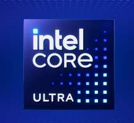
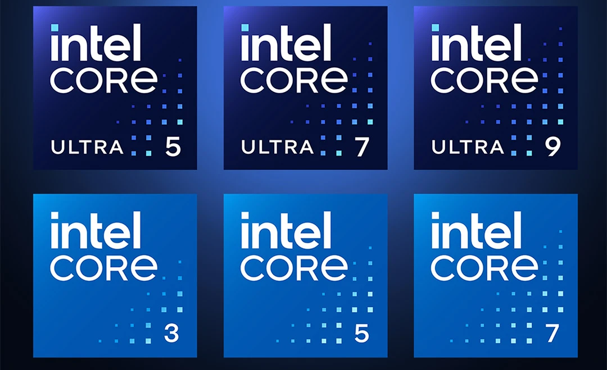

Core ULTRA
Nowa era procesorów Intel

Matt
19.09.2024
Intel Core ULTRA
Technologia
Intel rewolucjonizuje krajobraz procesorów dzięki swojej nowej serii Core Ultra, która nie tylko wprowadza nowe nazwy, ale także nowe możliwości. Rodzina Meteor Lake jest pierwszą, która wprowadza dedykowany koprocesor Neural Processing Unit (NPU), znacznie zwiększając wydajność sztucznej inteligencji (AI) przy jednoczesnym zachowaniu niskiego zużycia energii. Ta innowacja zmniejsza obciążenie zarówno CPU, jak i GPU w zadaniach AI.
Procesor Core Ultra 7 165H skradł show na konferencji Intel AI Everywhere, oferując o 11% wyższą wydajność wielowątkową w porównaniu do konkurencyjnych procesorów, w tym Ryzen 7 7840U, Snapdragon 8cx Gen 3 i Apple M3. Co więcej, jest o 25% bardziej energooszczędny niż jego poprzednik, Intel Core i7-1370P.
Jednak prawdziwym okrętem flagowym nowej serii jest Core Ultra 9 185H. Ten procesor ma 16 rdzeni, w tym 6 wydajnych rdzeni P-Core, 8 energooszczędnych rdzeni E-Core i 2 niezwykle energooszczędne rdzenie LP-E. Z częstotliwością taktowania 5,1 GHz i zintegrowaną grafiką Intel Arc z 8 rdzeniami Xe obsługującymi ray tracing, jest idealnym wyborem dla najbardziej wymagających użytkowników.
Firma Intel ogłosiła również następną generację procesorów, Core Ultra 200 (Lunar Lake), które mają trafić na rynek w 2024 r. Procesory te będą oparte na nowej, hybrydowej architekturze łączącej wysokowydajny Lion Cove (P-Core) z energooszczędnym Skymont (E-Core). Wprowadzenie nowego NPU w Core Ultra 200 ma przynieść trzykrotny wzrost wydajności AI w porównaniu z obecnymi modelami Meteor Lake.

Seria Core Ultra oznacza znaczącą zmianę w projektowaniu procesorów Intel, skupiając się na wydajności AI i energooszczędności. Integracja dedykowanego koprocesora NPU zmienia zasady gry, umożliwiając szybsze i wydajniejsze przetwarzanie AI. Dzięki nadchodzącej serii Core Ultra 200 firma Intel jest gotowa na dalsze umacnianie swojej pozycji na rynku procesorów.